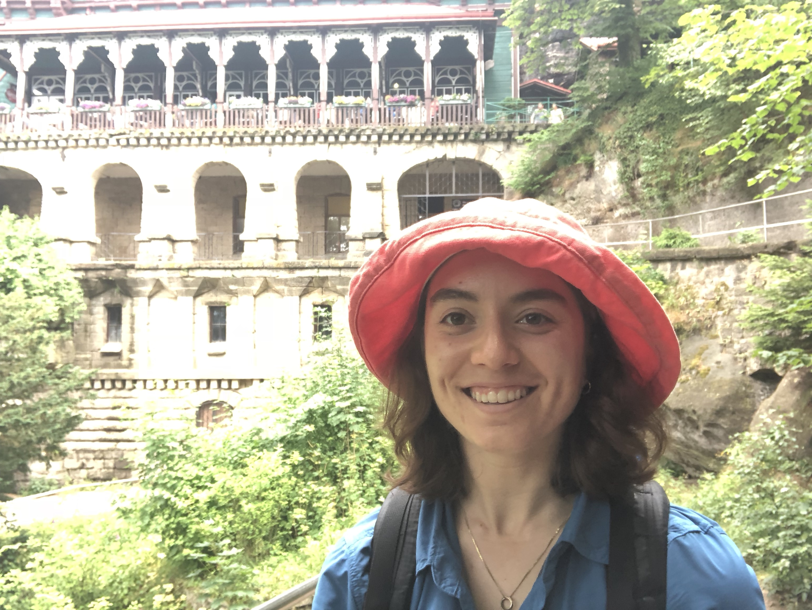

About
My name is Elise Newman and I am a rising 5th year student in the MIT linguistics department. I work primarily on syntax and semantics, with additional interests in first language acquisition. Some projects I am currently working on include movement/(anti)agreement correlations in Romance and Mayan, tense interpretation in English adjunct clauses, and the child acquisition path of even (joint research with Yadav Gowda, Leo Rosenstein and Martin Hackl).
Outside of class and research, I can usually be found either on the soccer field, in the pottery studio, or out of town hiking/cycling.
Papers
Newman, E. (submitted). English adjunct tense is real and relative: clues from the perfect.
Newman, E. (submitted). On the movement/(anti)agreement correlation in Romance and Mayan.
Gowda, Y., E. Newman, L. Rosenstein, and M. Hackl (to appear). Scalar inferences in the acquisition of even. Frontiers in Communication, section Language Sciences: Preprint version.
Newman, E. (to appear). vP infinitives in Wolof: on A'-movement to Spec vP. ACAL 2019 Proceedings: Preprint version.
Newman, E. (2020). Facilitator effects in middles and more. Glossa: A Journal of General Linguistics, 5(1), 62. DOI: http://doi.org/10.5334/gjgl.990
Presentations
"The future since Stump". LSA 2020. Poster.
"vP-infinitives in Wolof: on A'-movement to Spec vP". ACAL 2019. Handout.
"Polarity sensitivity of even in early child grammar". GALANA 2018. Co-presented with Yadav Gowda, Leo Rosenstein and Martin Hackl. Poster.
"Polarity sensitivity of even in early child grammar". Learnability in a Parametric World 2018. Co-presented with Yadav Gowda, Leo Rosenstein and Martin Hackl. Slides.
"In do-support of phrasal auxiliary movement." OLINCO 2018. Handout.
"The Lubukusu agreeing complementizer." LSA 2018 workshop on the syntax of clausal arguments in Bantu. Co-presented with Danfeng Wu. Handout.
Unpublished manuscripts
"In do-support of phrasal auxiliary movement."Ms. 2018.
General's paper on especially.
Undergraduate thesis on the Shanghainese ne construction.
Undergraduate thesis in physics about an experiment designed to measure sterile neutrinos.